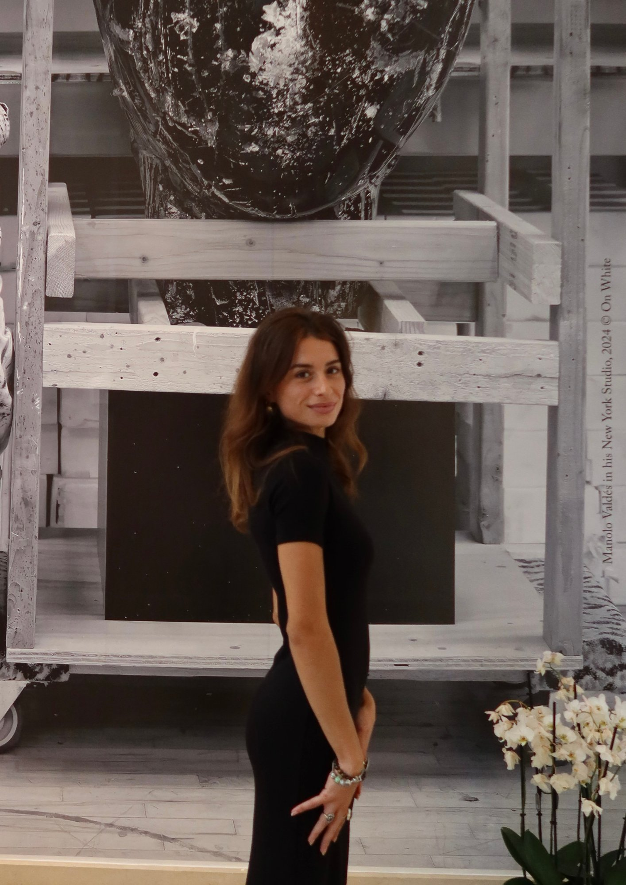

Communication · Events · Creative
Circus artist turned strategist.
A life built at the intersection of movement, meaning, and craft.

I am a multidisciplinary creative whose path has never followed a straight line — and I wouldn't have it any other way. My story moves between art and strategy, between body and language, between the intimate and the international.
At eighteen, I packed my bags and moved to London for six months — alone, curious, and fully alive to the world. I worked as an au pair for three beautiful children, and in doing so I learned something no curriculum could teach: how to hold space for others, how to adapt, how to be present. That season shaped me quietly and completely.
Today I am a final-year Honours student at the International University of Monaco, specialising in Communication and Events Management. I work in luxury digital marketing, manage social media communities, and build brands. I am also the founder of Lore, a social reading platform for the next generation of readers — a project that brings together technology, culture, and community in equal measure.
What connects everything I do: an obsession with how stories are told, and who gets to tell them.
Before strategy, there was the body. Before words, there was presence. For eight years, I trained and performed as a contemporary circus artist — a chapter that shaped everything I am and everything I create.
My disciplines were aerial rope and silks: the art of ascending, suspending, and descending with grace. Each session was a conversation between strength and surrender, between control and release. I learned what it means to trust your body completely, to fail and return, to find beauty in effort.
Circus is not decoration. It is a practice of radical discipline. It taught me presence — a quality I carry into every room, every project, every relationship I invest in.
Corde lisse. The fundamental vertical. Strength, precision, expression.
Tissu. Two ribbons of fabric as partner, language, stage.
The body as narrative. Every gesture intentional.
Presence before performance. The quality everything else grows from.
"The body remembers what the mind forgets."
Eight years of training, performing, and competing as an aerial artist. Aerial rope and silks. A foundation of discipline, physical intelligence, and creative confidence that no classroom could have given me.
Six months in London at eighteen. Au pair for three extraordinary children. A school of patience, warmth, and radical adaptability. My first real step into the world alone.
Began building brand identities, websites and social strategies for clients across industries. A parallel creative practice that grew organically into a fully formed offering.
BBA Honours, specialisation in Communication and Events Management. Elected President of the IUM Art Society. Founded Lore, a social reading platform for Gen Z readers, as my capstone entrepreneurial project.
John Molson School of Business, Concordia University. Sports Marketing, Entrepreneurship, Cross-Cultural Communication. A semester that deepened my international lens.
End-to-end luxury event coordination. Sole coordinator of a 130+ guest wedding. Content production, social media, brand communications. The full luxury stack, in practice.
VIP hospitality and brand representation during one of the world's most exclusive maritime events. Presence, discretion, luxury standards.
Digital communications and CRM for Ultra-High-Net-Worth Individuals across yachting, real estate, private aviation, and private investment. Integrated campaigns, content strategy, brand positioning at the highest register.
Social Media · Content · Community
Creative content and community building for SEN Monaco, a contemporary platform with a strong visual identity.
Direction · Curation · Community
As President, I reshaped the IUM Art Society into an active creative space — exhibitions, collaborations, and a platform for emerging voices on campus.
Founder · Strategy · Product
A social reading platform for Gen Z and millennial readers. My Honours capstone — a full entrepreneurial plan spanning product design, financial modelling, brand identity, and go-to-market strategy.
Bookstagram · Content Creation · Community
Active since 2020. A literary community built on editorial photography, honest reviews, and a genuine love for books and visual storytelling.
In Progress
New projects and collaborations always in motion. Check back.
The Agency, Monaco
Digital communication and CRM for UHNWI clients across luxury verticals: yachting, real estate, private aviation, private investment.
CLS Monaco
End-to-end luxury event coordination. Sole coordinator of a 130+ guest wedding. Brand content and social media management.
Bilgin Yachts, Monaco
VIP guest management and brand representation at the Monaco Yacht Show.
Brand identities, websites, logos, and social strategy for SME clients across industries.
London, UK
Six months full-time care for three children in a private household. A formative experience in responsibility, presence, and cross-cultural living.
International University of Monaco
Luxury Marketing, Brand Management, Event Management, Corporate Finance. President, IUM Art Society.
Concordia University, Montréal
Sports Marketing, Entrepreneurship, Cross-Cultural Communication, Marketing Research.
SEO/SEM · Google Ads · Meta Ads · Email Marketing · Social Media Strategy · Brand Positioning · Marketing Research
Adobe Creative Suite (Photoshop, Illustrator, InDesign) · Figma · WordPress · CapCut
Italian — Native | English — C2 (Cambridge Advanced) | French — Beginner | Spanish — Beginner
Inside LVMH Certificate | Cambridge C1 Advanced | Excel 2021 Essential–Advanced
I'm open to editorial internships, creative collaborations, events, and conversations worth having.